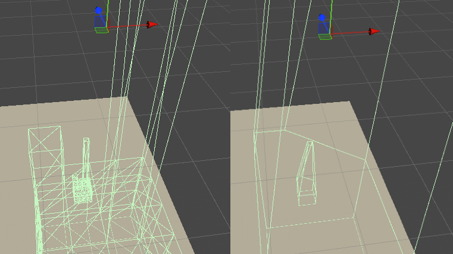

99% Visible: Photography System in "A Search For a Shiny Thing"
Introduction
From 2024 to 2026 I worked on a photography adventure game titled "A Search for a Shiny Thing", a project that is now unfortunately placed on indefinite pause. From the outset, we knew that photography would be the most important system to get right, and we set out to create a system with a lot more depth than any of the existing photography games on the market. In this article, I will break down one particular aspect of the system - visibility detection. One of the core pillars of this system is *accuracy*, and how I managed to make this pillar a reality is what I will be talking about in this article.
The Problem
The purpose of the visibility system in ths context and in it's basic form is to determine which objects are visibile inside the frame of a photo camera. However, a simple true or false is very limiting, taking a good photograph is more than just an object existing in the frame. In real photography you have to think about lighting, focus, composition, etc. While realism had never been a priority, we want to create a system with depth that players would have fun playing around with. Something that would encourage them to take good photographs, not just something that ticks a box. We had never planned on implementing a scoring system because we wanted to focus on player interpretation, but in our game players can take on quests which require handing in a photograph to complete. When you hand in a photograph we evaluate it to determine if it's suitable to complete the quest. We wanted to evaluate how much of the object is visible in the frame, how well lit it is and whether it's in focus. But how do you actually accomplish that?

Typical Implementation
You may have stumbled upon this viral short by Gdquest that explains a typical approach of implementing AI sight perception. You simply shoot a bunch of rays and count how many of them hit target without being occluded by something between enemy and player. It works great for some genres, like stealth games, but photography games can be more complicated. Depending on how many photographable objects you have, it may be detrimental to performance to check every one of them for visibility. You have to first perform some sort broadphase cull, it can be frustum culling or a spacial partitioning system. Given that your game is 3D and you don't have a complicated occlusion culling system, you'd then do your raycasting on a narrow set of relevant objects.

For what we had in mind, however, we needed more flexibility and precision. However it's done, it must work for arbitrary shapes and we must be able to see how much of the object is visible, not just a true/false. You can achieve the former with pixel-perfect accuracy with a custom render pass (here is an example), but this approach wouldn't be suitable for the latter so back to raycasting for a moment. If you have an arbitrary shape, how do you know where to shoot the rays? From a workflow perspective, manually setting up raycasting locations would be bad. I could make a tool to voxelize meshes or auto generate "skeletons" to provide raycasting targets, but is this really the best approach? Performance was a concern too, not only because of the amount of rays but also collider complexity. We would want to use mesh colliders to save ourselves a lot of tedious work and they can't always be convex. I haven't profiled it, but it could potetnially be quite expensive. The only thing left to do was to invent something new.

The Solution
There must be a way to do this on the GPU, I thought. When we're talking about quantifiying how much of the object is visible we are essentially talking about the visible surface area. How do we calculate the surface area of an arbitrary 3D object? Well, we can calculate the surface area of each triangle, but how do we know which triangles are visible? Let's put a pin on triangles and talk about it at the end of the article. What if we convert the problem from 3D to 2D? That's essentially what UV mapping is. You take the 3D model's surface and convert it to a 2D plane, which can be rendered as a texture, providing us with a reference point of what 100% visibility is. The problem of frustum and occlusion culling is already solved by the GPU, it already renders only the visible fragments. All that remains is to write which fragments are visible to a texture and compare it with the reference. Luckily, since shader model 5, it's possible to write to a UAV (unordered access view, i.e. random read/write) texture from a fragment shader. As for comparing it with a reference, that can be done using a compute shader which we can dispatch in a custom render pass and request to read the results asynchronously.

This is what the fragment shader looks like, simplified. I didn't include the lengthy section of code that deals with lighting calculations, including calculating lambertian diffuse and sampling baked lighting. Ideally, I would simply take a linear mesaure of how lit the object is, but it's more complicated if you account for baked lighting because it can be colored. To resolve that issue, I conver the linear RGB color to luminance, and then to percieved lightnightss (CIELAB L*). The last step is optional, but it makes the lightness measure appear more correct to human eyes. Calculating focus is simpler, using Unity's depth of field post-processing feature you can directly sample the circle of confusion texture. The value needs to be remapped because Unity encodes 0.5 as being most in focus, and 0 and 1 represent full near and far blur respectively.
RWTexture2D<float2> output;
[earlydepthstencil]
float3 frag(v2f i) : SV_Target
{
...
float lightness = ColorToLStar(color);
float focus = SampleCoCTexture(i.positionNDC.xy / i.positionNDC.w);
float2 pixelUV = i.uv * _ReferenceSize;
output[pixelUV.xy] = float2(lightness, focus);
// return debug color
}Quirks, Growth and Scaling
Challenge #1: Early-Z
You may have spotted a curious [earlydepthstencil] in the code above, which is included for a reason. Early on when I was protyping the visibility system I ran into a difficult bug. When I checked the output texture I could see that fragments that shouldn't be visible were being rendered, which put the whole idea in doubt. If I looked at an object from a perspecive where one part of the object obscured another part of the object for whatever reason I could still see the fragments that should've been discarded in a early-z test still being rendered. If you've done some graphics programming, you might know that writing to depth disables early-z. That makes sense because the GPU can't know for sure if the depth value is going to remain the same. Well, as it turns out, for whatever reason if you write to UAV texture early-z is also gets disabled by default. I couldn't find out why it happens (it was difficult enough to discover what's going on in the first place), so if you know please let me know. Thankfully, there is an attribute that allows you to force early depth-stencil testing. I doubt it's looking good for porting ASFAST to different platforms at this point, but this solves the issue.
Challenge #2: Performance/Scale
Future Work
While the photography system has been battle tested in internal and external playtests, it's by no means fully complete and there are a lot of avenues we haven't explored yet. Evaluating the composition of a photograph is an interesting topic we haven't yet explored, but it's outside of the scope of this article. There may be a different approach to visibility detection too.